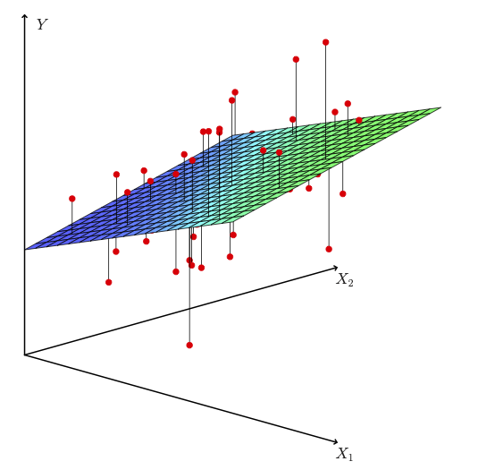

Stat 406
Geoff Pleiss, Trevor Campbell
Last modified – 11 September 2024
\[ \DeclareMathOperator*{\argmin}{argmin} \DeclareMathOperator*{\argmax}{argmax} \DeclareMathOperator*{\minimize}{minimize} \DeclareMathOperator*{\maximize}{maximize} \DeclareMathOperator*{\find}{find} \DeclareMathOperator{\st}{subject\,\,to} \newcommand{\E}{E} \newcommand{\Expect}[1]{\E\left[ #1 \right]} \newcommand{\Var}[1]{\mathrm{Var}\left[ #1 \right]} \newcommand{\Cov}[2]{\mathrm{Cov}\left[#1,\ #2\right]} \newcommand{\given}{\ \vert\ } \newcommand{\X}{\mathbf{X}} \newcommand{\x}{\mathbf{x}} \newcommand{\y}{\mathbf{y}} \newcommand{\P}{\mathcal{P}} \newcommand{\R}{\mathbb{R}} \newcommand{\norm}[1]{\left\lVert #1 \right\rVert} \newcommand{\snorm}[1]{\lVert #1 \rVert} \newcommand{\tr}[1]{\mbox{tr}(#1)} \newcommand{\brt}{\widehat{\beta}^R_{s}} \newcommand{\brl}{\widehat{\beta}^R_{\lambda}} \newcommand{\bls}{\widehat{\beta}_{ols}} \newcommand{\blt}{\widehat{\beta}^L_{s}} \newcommand{\bll}{\widehat{\beta}^L_{\lambda}} \newcommand{\U}{\mathbf{U}} \newcommand{\D}{\mathbf{D}} \newcommand{\V}{\mathbf{V}} \]
Assume that
\[ y_i = x_i^\top \beta + \epsilon_i. \]
\[ y_i = x_i^\top \beta + \epsilon_i. \]
How would I create data from this model (draw a sample)?
Set up constants
Create the data
epsilon <- rnorm(n, sd = sigma) # this is random
X <- matrix(runif(n * p), n, p) # treat this as fixed, but I need numbers
beta <- (p + 1):1 # parameter, also fixed, but I again need numbers
Y <- cbind(1, X) %*% beta + epsilon # epsilon is random, so this is
## Equiv: Y <- beta[1] + X %*% beta[-1] + epsilon\[\mathrm{Error} = \sum_{i=1}^n ( y_i - x_i^\top \widehat\beta )^2.\]

Why squared errors? \(( y_i - x_i^\top \widehat\beta )^2\)
Why not absolute errors \(\left\lvert y_i - x_i^\top \widehat\beta \right\rvert\)?
We write this as
\[\widehat\beta = \argmin_\beta \sum_{i=1}^n ( y_i - x_i^\top \beta )^2.\]
Find the \(\beta\) which minimizes the sum of squared errors.
Note that this is the same as
\[\widehat\beta = \argmin_\beta \frac{1}{n}\sum_{i=1}^n ( y_i - x_i^\top \beta )^2.\]
Find the beta which minimizes the mean squared error.
We differentiate and set to zero
\[\begin{aligned} & \frac{\partial}{\partial \beta} \frac{1}{n}\sum_{i=1}^n ( y_i - x_i^\top \beta )^2\\ &= -\frac{2}{n}\sum_{i=1}^n x_i (y_i - x_i^\top\beta)\\ &= \frac{2}{n}\sum_{i=1}^n x_i x_i^\top \beta - x_i y_i\\ 0 &\equiv \sum_{i=1}^n x_i x_i^\top \beta - x_i y_i\\ &\Rightarrow \sum_{i=1}^n x_i x_i^\top \beta = \sum_{i=1}^n x_i y_i\\ \\ &\Rightarrow \beta = \left(\sum_{i=1}^n x_i x_i^\top\right)^{-1}\sum_{i=1}^n x_i y_i \end{aligned}\]…this is
\[\hat\beta = ( \mathbf{X}^\top \mathbf{X})^{-1} \mathbf{X}^\top\mathbf{y}.\]
The \(\beta\) which “minimizes the sum of squared errors”
AKA, the SSE.
Method 2 didn’t use anything about the distribution of \(\epsilon\).
But if we know that \(\epsilon\) has a normal distribution, we can write down the joint distribution of \(\mathbf{y}=(y_1,\ldots,y_n)^\top = \mathbf{X}\beta + (\epsilon_1, \ldots, \epsilon_n)^\top\):
\[ \epsilon_i = \left( y_i - x_i^\top \beta \right) \sim \mathcal{N}(0, \sigma^2) \]
So the probability density of \(Y = \mathbf y\) is…
\[\begin{aligned} f_Y(\mathbf{y} ; \beta) &= \prod_{i=1}^n f_{y_i ; \beta}(y_i) \\ &= \prod_{i=1}^n \frac{1}{\sqrt{2\pi\sigma^2}} \exp\left(-\frac{1}{2\sigma^2} (y_i-x_i^\top \beta)^2\right) \\ &= \left( \frac{1}{2\pi\sigma^2}\right)^{n/2} \exp\left(-\frac{1}{2\sigma^2}\sum_{i=1}^n (y_i-x_i^\top \beta)^2\right) \end{aligned}\]\[ f_Y(\mathbf{y} ; \beta) = \left( \frac{1}{2\pi\sigma^2}\right)^{n/2} \exp\left(-\frac{1}{2\sigma^2}\sum_{i=1}^n (y_i-x_i^\top \beta)^2\right) \]
In probability courses, we think of \(f_Y\) as a function of \(\mathbf{y}\) with \(\beta\) fixed:
…instead, think of it as a function of \(\beta\).
We call this “the likelihood” of beta: \(\mathcal{L}(\beta)\).
Given some data, we can evaluate the likelihood for any value of \(\beta\) (assuming \(\sigma\) is known).
It won’t integrate to 1 over \(\beta\).
But we can maximize it with respect to \(\beta\).
The derivative of \(\mathcal L(\beta)\) is ugly…
\[ \frac{\partial}{\partial \beta} \left[ \left( \frac{1}{2\pi\sigma^2}\right)^{n/2} \exp\left(-\frac{1}{2\sigma^2}\sum_{i=1}^n (y_i-x_i^\top \beta)^2\right) \right] = \text{😔} \]
I claim we can maximize \(\mathcal L(\beta)\) over \(\beta\) by instead maximizing the simpler function \(\ell(\beta) = \log \mathcal L(\beta)\). (Why?)
\[ \hat\beta = \argmax_\beta \ell(\beta) = \argmax_\beta \left[ -\frac{n}{2}\log (2\pi\sigma^2) -\frac{1}{2\sigma^2} \sum_{i=1}^n (y_i-x_i^\top \beta)^2 \right] \]
We can also throw out the constants. (Why?)
So…
\[\widehat\beta = \argmax_\beta -\sum_{i=1}^n (y_i-x_i^\top \beta)^2 = \argmin_\beta \sum_{i=1}^n (y_i-x_i^\top \beta)^2\]
The same as before!
(Not in real time)
UBC Stat 406 - 2024